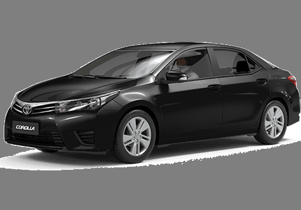

Economic Class |
Middle Class |
High level |
| (4 Portas - Ar-condicionado - 2008) | (4 Portas - Ar-condicionado - Banco de Couro 2014) | 4 Portas - Ar-condicionado - Banco de Couro - Automático - 2016) |
| Cálculo de Valores | Cálculo de Valores | Cálculo de Valores |
| 0,75 + (1,40 x KM) + (0,15 x Min) = Valor Final da Viagem | 1,50 + (2,00 x KM) + (0,30 x Min) = Valor Final da Viagem | 2,25 + (2,50 x KM) + (0,50 x Min) = Valor Final da Viagem |
|  |